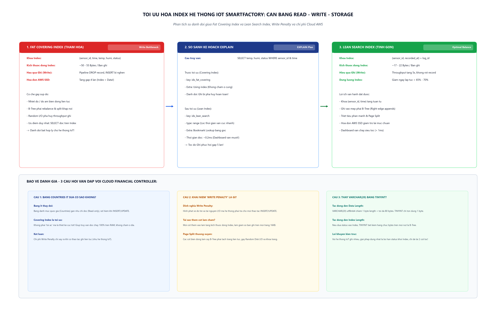

Phân tích bài toán đánh đổi khốc liệt giữa tốc độ đọc (Read), tốc độ ghi (Write) và chi phí lưu trữ đám mây AWS khi loại bỏ Fat Covering Index và triển khai Lean Search Index.
Minh họa trực quan cấu trúc trang nhớ 16KB InnoDB, hiện tượng Page Split của Fat Covering Index và luồng giải phóng I/O của Lean Search Index.

Ước tính quy mô phình to của Index và chi phí ổ cứng AWS EBS gp3 ($0.08 / GB / tháng) theo lưu lượng thực tế của nhà máy.
| Tên trường | Kiểu dữ liệu | Kích thước vật lý | Có trong Fat Index | Có trong Lean Index | Nhận định kỹ thuật của DBA |
|---|---|---|---|---|---|
sensor_id |
INT | 4 bytes | CÓ | CÓ | Khóa lọc bắt buộc trong mệnh đề WHERE sensor_id = ?. |
recorded_at |
DATETIME | 5 bytes | CÓ | CÓ | Lọc dải thời gian liên tục WHERE recorded_at >= ?. |
temperature |
DECIMAL(5,2) | 3 bytes | CÓ (DƯ THỪA) | LOẠI BỎ | Chỉ là payload hiển thị, giá trị dao động ngẫu nhiên làm rách trang. |
humidity |
DECIMAL(5,2) | 3 bytes | CÓ (DƯ THỪA) | LOẠI BỎ | Tương tự nhiệt độ, làm phình to nút lá vô ích. |
status |
VARCHAR(20) | ~16 bytes | CÓ (DƯ THỪA) | LOẠI BỎ | Độ phân giải cực thấp (chỉ 3 giá trị), chiếm 30% dung lượng dòng Index. |
log_id (PK) |
BIGINT | 8 bytes | TỰ ĐỘNG KÈM | TỰ ĐỘNG KÈM | InnoDB tự động gán khóa Clustered Key vào mọi nút lá phụ. |
| Header & Overhead | B-Tree Pointer | ~6 - 8 bytes | 8 bytes | 6 bytes | Bao gồm con trỏ trang và metadata tiêu chuẩn của InnoDB. |
| TỔNG KÍCH THƯỚC TRÊN MỖI DÒNG INDEX: | ~47 - 55 bytes / dòng | ~23 bytes / dòng | Tiết kiệm ~58% kích thước mỗi khóa | ||
-- ====================================================================
-- KICH BAN TOI UU HOA INDEX HE THONG IOT SMARTFACTORY
-- ====================================================================
USE smartfactory_db;
-- 1. Loai bo Fat Covering Index gay tac nghen luong ghi
DROP INDEX idx_fat_covering ON SensorLogs;
-- 2. Tao Lean Search Index tinh gon chi giu lai 2 cot dieu kien loc
CREATE INDEX idx_lean_search ON SensorLogs(sensor_id, recorded_at);
-- 3. To chuc lai cac trang nho va giai phong dung luong da huy
OPTIMIZE TABLE SensorLogs;
-- 4. Kiem tra lai danh sach Index hien huu
SHOW INDEX FROM SensorLogs;-- TRUOC TOI UU (Fat Covering Index):
EXPLAIN SELECT recorded_at, temperature, humidity, status
FROM SensorLogs
WHERE sensor_id = 1 AND recorded_at >= NOW() - INTERVAL 1 HOUR;
-- ket qua:
-- id | select_type | table | type | possible_keys | key | key_len | ref | rows | Extra
-- 1 | SIMPLE | SensorLogs | ref | idx_fat_covering | idx_fat_covering | 5 | ... | 42 | Using index
-- SAU TOI UU (Lean Search Index):
EXPLAIN SELECT recorded_at, temperature, humidity, status
FROM SensorLogs
WHERE sensor_id = 1 AND recorded_at >= NOW() - INTERVAL 1 HOUR;
-- ket qua:
-- id | select_type | table | type | possible_keys | key | key_len | ref | rows | Extra
-- 1 | SIMPLE | SensorLogs | ref | idx_lean_search | idx_lean_search | 5 | ... | 42 | Using index conditionSELECT
TABLE_NAME,
TABLE_ROWS,
ROUND(DATA_LENGTH / 1024 / 1024, 4) AS Data_Size_MB,
ROUND(INDEX_LENGTH / 1024 / 1024, 4) AS Index_Size_MB,
ROUND((DATA_LENGTH + INDEX_LENGTH) / 1024 / 1024, 4) AS Total_Size_MB,
ROUND(INDEX_LENGTH / DATA_LENGTH, 2) AS Index_to_Data_Ratio
FROM information_schema.TABLES
WHERE TABLE_SCHEMA = 'smartfactory_db' AND TABLE_NAME = 'SensorLogs';Trả lời: Hoàn toàn không còn là tội ác, mà ngược lại đó là một giải pháp kiến trúc tối ưu mẫu mực.
Lý do kỹ thuật:
Countries là một bảng danh mục tra cứu (Lookup / Reference Table) có khối lượng dữ liệu tĩnh, số lượng bản ghi cố định (~200 quốc gia) và tần suất ghi gần như bằng 0 (Read-mostly).INSERT hay UPDATE diễn ra liên tục, chi phí Write Penalty hoàn toàn bị triệt tiêu. Hệ thống không phải lo lắng về việc tái cân bằng cây B-Tree hay tách trang (Page Split).Kết luận: Tính đúng đắn của Covering Index phụ thuộc hoàn toàn vào tỷ lệ Đọc/Ghi (Read/Write Ratio).
Trả lời:
INSERT, UPDATE, DELETE) để duy trì cấu trúc sắp xếp thứ tự của các cây chỉ mục B-Tree.temperature và humidity, thao tác ghi không còn diễn ra ở mép phải của B-Tree mà biến thành Random Writes, gây nghẽn toàn bộ luồng I/O.Trả lời:
Đây chỉ là giải pháp "chữa cháy hình thức". Bản chất cột status chỉ có 3 trạng thái phân biệt (Cardinality cực thấp). Cột này không mang lại bất kỳ giá trị chọn lọc nào trong các truy vấn tìm kiếm theo dải thời gian.
Sai lầm cốt lõi là đưa cột status vào trong cây Index. Giải pháp kiến trúc đúng đắn nhất là loại bỏ hoàn toàn cột status ra khỏi Index, chỉ giữ lại cặp khóa lọc tinh gọn (sensor_id, recorded_at).